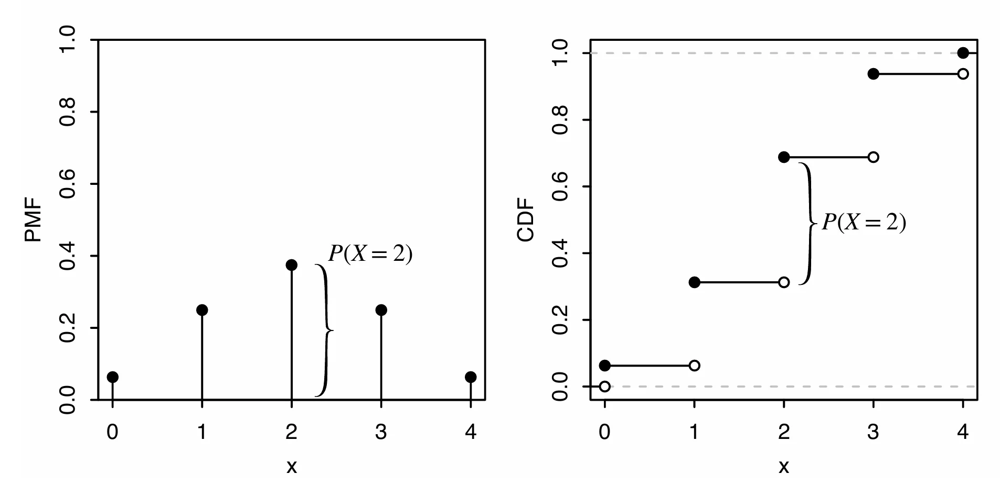
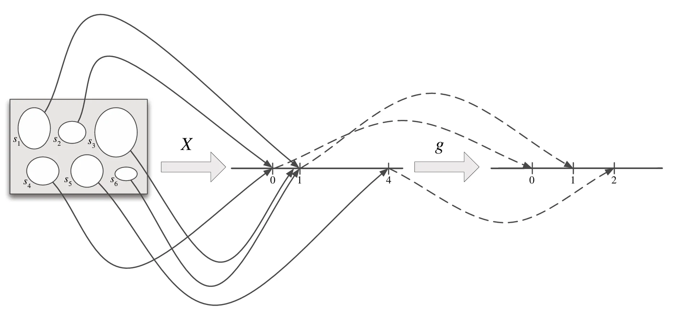

Random Variables and their Distributions
Random Variables
随机变量(random variable)是一个非常有用的概念，它简化了符号表示，并扩展了我们量化不确定性和总结实验结果的能力
对于一个样本空间为 \(S\) 的实验，随机变量是一个将样本空间 \(S\)的事件\(s\)映射到实数 \(\mathbb{R}\) 的函数
随机变量的随机来源于实验会产生一个随机的结果，但是映射关系本身是确定的
随机变量为实验提供了一个数值总结，相较于处理 \(S\) 全部的复杂结果，这一事实是一个相当方便的简化
Distributions and Probability Mass Functions
如果一个随机变量 \(X\) 是一个有限值序列 \(a_1,a_2,\cdots,a_n\) 或者是一个无限值序列 \(a_1,a_2,\cdots\) 且满足存在某些值 \(a_j\) 使得 \(\sum\limits_{j}P(X=a_j)=1\)，那么 \(X\) 是一个离散随机变量(dicrete random variable)
如果 \(X\) 是一个离散随机变量，那么满足 \(P(X=x)>0\) 的元素 \(x\) 的组成的有限或可数无限集合被称为 \(X\) 的支撑(support)
随机变量的分布(distribution)表示与该随机变量相关的事件的概率。描述分布最常见的方法是概率质量函数(probability mass functions, PMF)
离散随机变量 \(X\) 的概率质量函数 \(p_X\) 为 \(P_X(x)=P(X=x)\).如果 \(x\) 是 \(X\) 的支撑那么 \(p_x>0\)，否则 \(p_X=0\)
在使用 \(P(X=x)\) 时，\(X=x\) 用来表示一个结果为 \(x\) 的事件
\(P(x)\) 是没有意义的，我们只能计算一个事件的概率，而不能计算随机变量的概率
对于支撑为\(x_1,x_2,\cdots\)的离散随机变量\(X\)，\(X\)的 PMF \(p_X\)必须满足下面两条性质
- 如果\(x=x_j\)，那么\(p_X(x)>0\)，否则\(p_X(x)=0\)
- \(\sum\limits^{\infty}_{j=1}P_X(x_j)=1\)
证明
- 值为正：根据支撑的定义，其概率为正
-
和为1：事件\({X=x_j}\)是互斥事件，因此
\[ \sum^{\infty}_{j=1}P(X=x_j)=P\left(\bigcup_{j=1}^{\infty}{X=x_j}\right)=1 \]
知道一个离散随机变量的 PMF 便可以确定它的分布
一些常用的随机变量分布有专门的名字，下面是几种常见的分布
Bernoulli and Binomial
对于一个只有两个取值（即0和1）的离散随机变量\(X\)，如果 \(X\)满足\(P(X=1)=p\)和\(P(X=0)=1-p,0<p<1\)，那么\(X\)是一个参数为\(p\)的伯努利分布(Bernoulli distrbution)。记作\(X\sim\text{Bern}(p)\)
所有可能的结果为0和1的随机变量都满足\(\text{Bern}(p)\)，\(p\)是随机变量等于1的概率。\(\text{Bern}(p)\)中的\(p\)被称为分布的参数，所以不仅仅存在一个伯努利分布，而是一系列伯努利分布
事件\(A\)的指示随机变量(indicator random variable)是一个满足事件发生则为\(1\)否则为\(0\)的随机变量。记作\(I_A\)或者\(I(A)\)
\(I\sim\text{Bern}(p)\)其中\(p=P(A)\)
一个要么成功要么失败的实验被称为伯努利试验(Bernoulli trial)
进行\(n\)组独立的伯努利试验，每组成功的概率均为\(p\)。令\(X\)为成功的次数，那么\(X\)满足二项分布 (Binomial distribution)。记为\(X\sim\text{Bin}(n, p)\)且\(n\)为正整数，\(0<p<1\). 二项分布\(\text{Bin}(n, p)\)的 PMF 为 $$ P(X=k)=\binom{n}{k}p^kq^{n-k} $$ 其中\(k=0, 1,\cdots,n\)，否则\(P(X=k)=0\)
定理：假设\(X\sim\text{Bin}(n, p)\)且\(q=1-p\)(\(q\)一般表示失败的概率)，那么\(n-X\sim\text{Bin}(n, q)\)
证明
将 \(n\)次独立伯努利试验看作抛硬币，\(X\)表示“成功”（正面）的次数。那么 \(n-X\) 就表示这 \(n\) 次试验中“失败”（反面）的次数。将硬币反面重新定义为新的“成功”，则每次试验成功的概率变为了 \(q=1-p\)，\(n-X\)自然服从参数为\(n\)和\(q\)的二项分布，即\(n-X \sim \text{Bin}(n, q)\)。
推论： 如果\(X\sim\text{Bin}(n, p)\)且\(p=\dfrac{1}{2},n\)为偶数，那么\(X\)的分布关于\(\dfrac{n}{2}\)对称。即对于非负整数\(j\)， $$ P(X=\frac n2+j)=P(X=\frac n2-j) $$
证明
当 \(p = \frac{1}{2}\) 时，\(q = 1 - p = \frac{1}{2}\)。 由上一结论可知，\(n-X \sim \text{Bin}(n, 1/2)\)，因此 \(X\) 与 \(n-X\) 具有完全相同的分布（即具有相同的 PMF）： $$ P(X = k) = P(n - X = k) = P(X = n - k) $$ 令 \(k = \frac{n}{2} + j\)（其中 \(j\) 为非负整数），代入上面的等式即可。
Hypergeometric
从一个有\(w\)个白球和\(b\)个黑球的盒子中不放回的拿出\(n\)个球，令\(X\)为拿出的白球的数量，那么\(X\)满足参数为\(w,b,n\)的 超几何分布(hypergeometric distribution)，记为\(X\sim\text{HGeom}(w, b, n)\) 超几何分布\(\text{HGeom}(w, b, n)\)的 PMF 为 $$ P(X=k)=\frac{\binom wk\binom{b}{n-k}}{\binom{w+b}{n}} $$ 其中\(0\le k\le w\)且\(0\le n-k \le b\)，否则\(P(X=k)=0\)
超几何分布将物体使用两组标签进行分类，在上面的例子中，每个球可以按颜色分为白色和黑色，也可以按是否被拿分为拿出和未拿出。只少有一组标签是完全随机分配的。因此可以将\(X\sim\text{HGeom}(w, b, n)\)看作同时满足两个标签的物体
定理：如果\(X\sim\text{HGeom}(w, b, n)\)并且\(Y\sim\text{HGeom}(n, w+b-n, w)\)，那么\(X\)和\(Y\)满足相同的分布
证明
沿用上面的例子，可以将超几何分布看作同时满足两个标签的物体，令\(X\)统计的是既是白色又是被抽中的球的数量。现在考虑另一组标签，即将“被抽中”看作总体特征（总体共有 \(n\) 个“被抽中的球”与 \(w+b-n\) 个“未被抽中的球”），从中随机“选择” \(w\) 个球（即所有的白球），设 \(Y\) 为选中的球中属于“被抽中”的球的数量。 由于 \(X\) 和 \(Y\) 统计的都是既是白球又被抽中的同一个交集物体数量，因此 \(X\) 和 \(Y\) 必定具有完全相同的分布
分别写出 \(X\) 和 \(Y\) 的 PMF： $$ P(X = k) = \frac{\binom{w}{k}\binom{b}{n-k}}{\binom{w+b}{n}} = \frac{\frac{w!}{k!(w-k)!} \cdot \frac{b!}{(n-k)!(b-n+k)!}}{\frac{(w+b)!}{n!(w+b-n)!}} = \frac{w! , b! , n! , (w+b-n)!}{k! , (w-k)! , (n-k)! , (b-n+k)! , (w+b)!} $$ $$P(Y = k) = \frac{\binom{n}{k}\binom{w+b-n}{w-k}}{\binom{w+b}{w}} = \frac{\frac{n!}{k!(n-k)!} \cdot \frac{(w+b-n)!}{(w-k)!(b-n+k)!}}{\frac{(w+b)!}{w!b!}} = \frac{w! , b! , n! , (w+b-n)!} {k! , (w-k)! , (n-k)! , (b-n+k)! , (w+b)!} $$ 因此 \(X\) 和 \(Y\) 具有完全相同的分布。
二项分布与超几何分布的区别
二项分布和超几何分布都可以看作是一系列伯努利试验，区别在于，二项分布的伯努利试验是独立的，而超几何分布不是独立的
Discrete Uniform
从一个有限的非空数集\(C\)中随机且均匀的选择一个数字，并将这个数字记为\(X\)，那么\(X\)满足参数为\(C\)的离散均匀分布(discrete uniform distribution)，记为\(X\sim\text{DUnif}(C)\) 离散均匀分布\(X\sim\text{DUnif}(C)\)的 PMF 为 $$ P(X=x)=\frac1{|C|} $$ 如果\(x\not\in C\)，那么为0
如果\(X\sim\text{DUnif}(C)\)，那么对于\(C\)的子集 \(A\)有 $$ P(x\in A)=\frac{|A|}{|C|} $$
Cumulative Distribution Function
除了 PMF 之外，还有一种表示分布的方法，被称为累计分布函数(cumulative distribution function, CDF)
离散随机变量 \(X\) 的累计分布函数 \(F_X\) 为 \(F_X(x)=P(X\le x)\).在不会产生歧义时记为\(F\)
CDF 满足以下三点性质
- 递增：如果\(x_1\le x_2\)，那么\(F_X(x_1)\le F_X(x_2)\)
- 右连续：在遇到边界时，满足 $$ F(a)=\lim_{x\to a^+}F(x) $$
- 极限从0到1： $$ \lim_{x\to-\infty}F(x)=0\quad\text{and}\quad\lim_{x\to+\infty}F(x)=1 $$
下图为\(X\sim\text{Bin}(4, 1/2)\)的 PMF 和 CDF

离散随机变量的PMF和CDF的互相转换
-
要从 PMF 得到 CDF，本质上是一个求和的过程。根据CDF 的定义，在任意实数 \(x\) 处的值 \(F(x) = P(X \le x)\)，即等于所有小于等于 \(x\) 的支撑集的 PMF 值之和： $$ F(x) = \sum_{k \le x} P(X = k) = \sum_{k \le x} p_X(k) $$ 在 PMF 的柱状图中，CDF 在 \(x\) 处的值就是所有位于 \(x\) 左侧（包括 \(x\) ）的垂直柱子高度的总和
-
要从 CDF 得到 PMF，本质上是一个寻找跳跃点并计算高度差的过程。离散随机变量的 CDF 图像由平坦区域和跳跃点组成。在跳跃点 \(x\) 处，CDF 图像会发生垂直向上的断层式跳跃。该跳跃的高度即为随机变量在该点处的 PMF 值： $$ P(X = x) = F(x) - \lim_{t \to x^-} F(t) $$ 而在平坦区域：CDF 的斜率为 0，这些区间对应的数值在 \(X\) 的支撑集之外，因此对应的 PMF 值为 \(0\)
Functions of Random Variables
随机变量的函数仍是随机变量
对于一个样本空间为\(S\)的实验和随机变量\(X\)，函数\(g(X):\mathbb{R}\to\mathbb{R}\)是一个将样本空间中的事件\(s\)映射到\(g(X)\)的随机变量（如下图所示）

对于一个已知其 PMF 的随机变量\(X\)，\(Y=g(X)\)，如果\(g\)是一个单射函数，那么可以将\(Y\)直接带入 $$ P(Y=g(x))=P(g(X)=g(x))=P(X=x) $$ 从而得到\(Y\)的 PMF
因此，在求一个不熟悉的随机变量的 PMF 时，可以尝试将它表示为一个熟悉的分布的单射函数
如果\(g\)不是单射函数，将会存在多个\(x\)满足\(g(x)=y\)，为了计算\(P(g(X)=y)\)，需要将所有候选的\(x\)对应的概率加起来，即 $$ P(g(X)=y)=\sum_{x:g(x)=y}P(X=x) $$
对于一个样本空间为\(S\)的实验，随机变量\(X\)和\(Y\)分别将事件\(s\in S\)映射到\(X(s)\)和\(Y(S)\)，那么 \(g(X, Y)\)是将\(s\)映射到\(g(X(s),Y(s))\)的随机变量
样本空间的构造
通常假设\(X\)和\(Y\)定义在同一个样本空间\(S\)上，因此可以选择一个足够包含 \(X\)和\(Y\)的样本空间。比如\(S_1=\{H, T\}\)，而\(S_2=\{1, 2, 3, 4, 5, 6\}\)，那么可以令\(S=S_1\times S_2=\{(s_1,s_2)|s_1\in S_1,s_2\in S_2\}\)
常见的错误
- 分类错误(category errors)如果混淆分布、随机变量、事件和数字
- sympathetic magic：混淆了随机变量和它的分布
为了避免上面的问题，在回答问题时应该总是思考答案的类别
Independence of Random Variables
当\(x, y\in\mathbb{R}\)时，如果随机变量\(X\)和\(Y\)满足 $$ P(X\le x,Y\le y)=P(X\le x)P(Y\le y) $$ 那么\(X\)和\(Y\)是独立的 对于离散随机变量，也可以等价的描述为 $$ P(X=x,Y=y)=P(X=x)P(Y=y) $$
对于超过两个的随机变量独立的定义类似于上面 当\(x_1,x_2,\cdots,x_n\in\mathbb{R}\)时,如果随机变量\(X_1,\cdots,X_n\)满足 $$ P(X_1\le x_1,\cdots,X_n\le x_n)=P(X_1\le x_1)\cdots P(X_n\le x_n) $$ 那么 \(X_1,\cdots,X_n\)是独立的。 对于无限个随机变量，如果它们的每一个有限的子集都是独立的，那么它们是独立的
如果\(X_1,\cdots,X_n\)是独立的，那么它们也是成对独立
如果\(X\)和\(Y\)是独立的随机变量，那么\(X\)的任意函数与\(Y\)的任意函数也是独立的
如果两个随机变量既独立又具有相同的分布，那么称其为独立且同分布(independent and identically distributed, i.i.d)
独立和同分布是两个易混淆但完全不同的概念，独立指的是两个随机变量不会互相为对方提供信息；同分布则是指两个随机变量的分布具有相同的 PMF（或 CDF）。两个随机变量是否独立与是否同分布没有关系
如果 \(X\sim\text{Bin}(n,p)\)，可以令\(X=X_1+\cdots+X_n\)，将其看作 一系列独立且同分布的随机变量\(X_i\sim\text{Bern}(p), x=1,\cdots n\)
定理：如果 \(X\sim\text{Bin}(n,p)\)并且\(X\sim\text{Bin}(m,p)\)，同时\(X\)和\(Y\)是独立的，那么 $$ X\sim\text{Bin}(n+m,p) $$
当\(x, y\in\mathbb{R},z\text{是}Z\)的任意支撑时，在随机变量\(Z\)的条件，如果随机变量\(X\)和\(Y\)满足 $$ P(X\le x,Y\le y|Z=z)=P(X\le x|Z=z)P(Y\le y|Z=z) $$ 那么\(X\)和\(Y\)是条件独立的 对于离散随机变量，也可以等价的描述为 $$ P(X=x,Y=y|Z=z)=P(X=x|Z=z)P(Y=y|Z=z) $$ 对于离散随机变量\(X\)和\(Z\)，当将函数\(P(X=x|Z=z)\)看作一个固定\(Z\)的关于\(X\)的函数时，这个函数被称为\(Z=z\)的条件下，\(X\)的条件 PMF
Connections between Binomial and Hypergeometric
定理：如果 \(X\sim\text{Bin}(n,p)\)并且\(X\sim\text{Bin}(m,p)\)，\(X\)和\(Y\)是独立的，那么在给定\(X+Y=r\)的条件下\(X\)的分布是\(\text{HGeom}(n,m,r)\)
定理：如果\(X\sim\text{HGeom}(w,b,n)\)并且\(N=w+b\to\infty\)，同时保持\(p=w/(w+b)\)不变,那么\(X\)的 PMF 为 \(\text{Bin}(n,p)\)